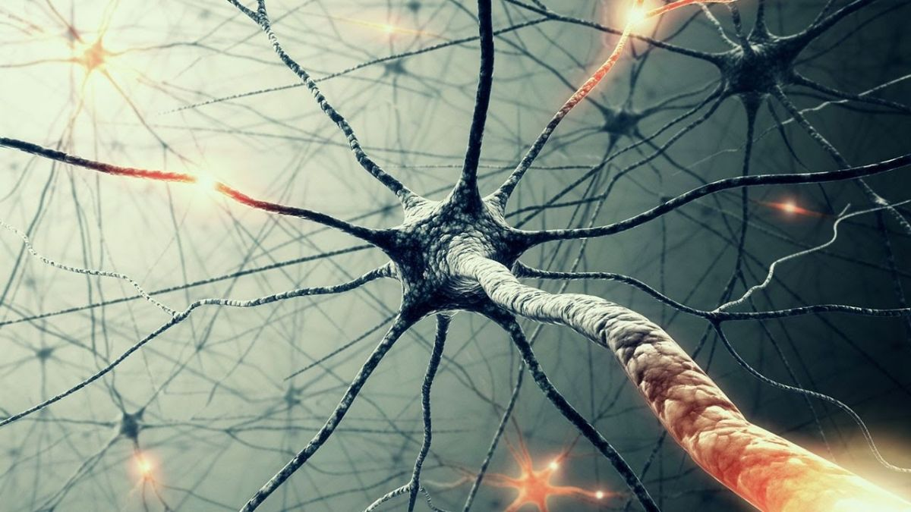

Marko Čupić
dljahd lashd ljas l d asdljh ljhasdlč dasjdh dkjad

Projekt se bavi izradom neuronskih mreža, njihovom evolucijom i igranjem igrice „Asteroids“. Potrebno je napraviti samu igricu kojoj se prikaz svijeta igrice se može prilagoditi načinu igranja za čovjeka i za neuronsku mrežu. Tokom učenja vremenski razmak između okvira („frame-a“) mora biti smanjen na minimum kako bi se učenje izvršavalo što brže.
....
....
....

.......

...........
..........